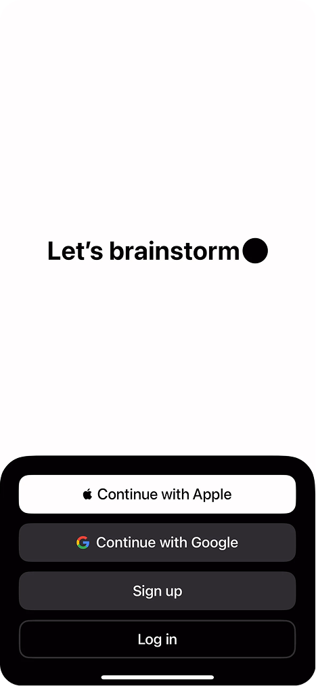
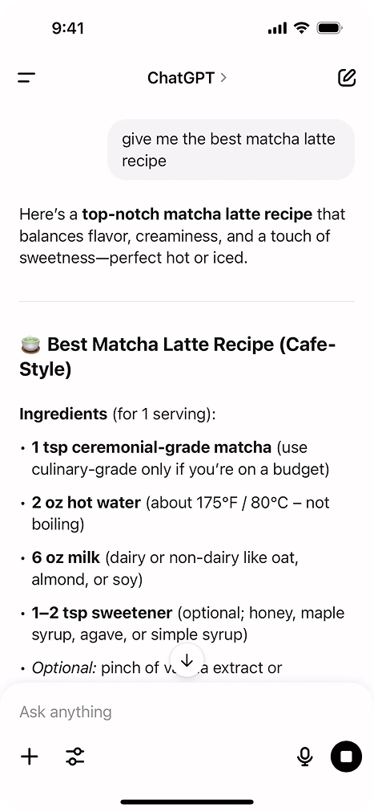
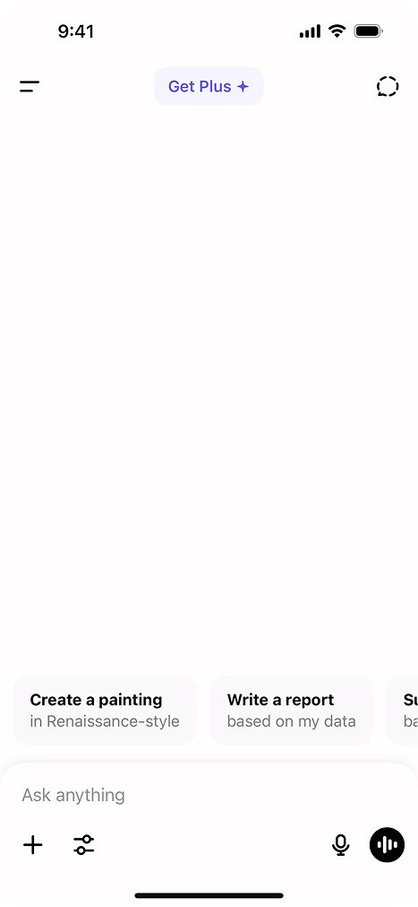
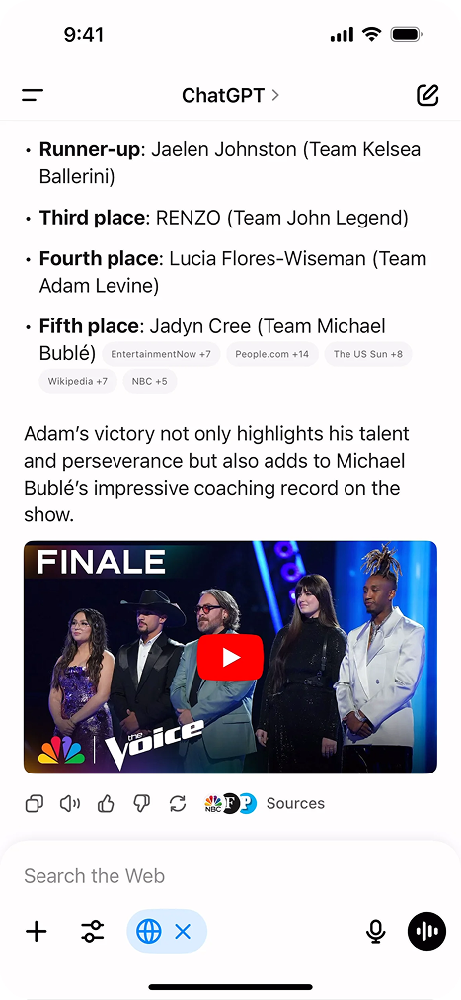
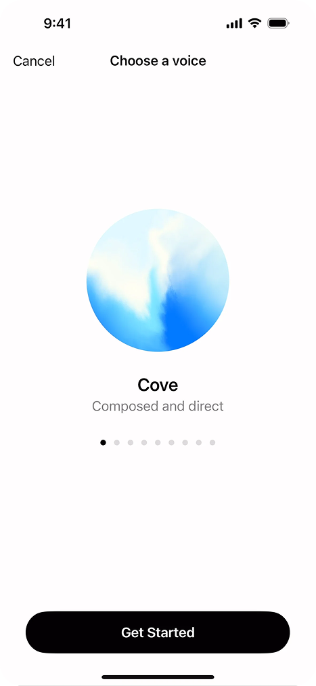
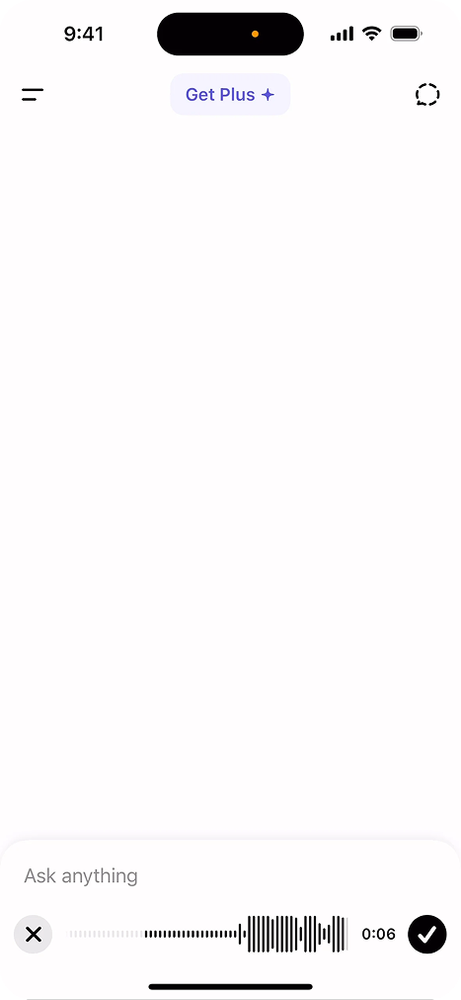

Назад
ChatGPT — флагманский диалоговый ИИ-ассистент от OpenAI. Один из самых распространённых продуктов в категории, задавший стандарты для большинства чат-интерфейсов с ИИ.
Интерфейс выстроен вокруг чистого диалога: минимум отвлекающих элементов, стриминг ответов в реальном времени, саджесты на стартовом экране и богатый маркдаун-рендеринг.
После завершения ответа пользователь может нажать его, чтобы продолжить диалог
В пустом состоянии чата есть подсказки — чтобы снизить барьер первого шага
Слишком много вариантов — 4 и более создают паралич выбора
Слишком много вариантов — 4 и более создают паралич выбора





